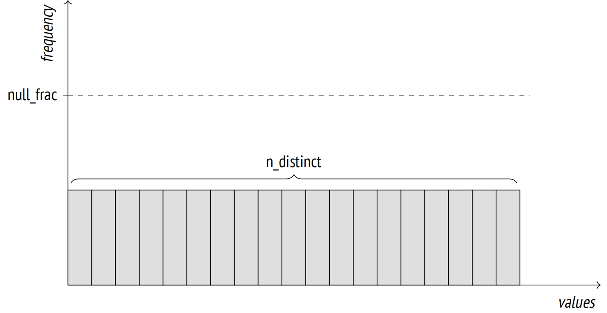
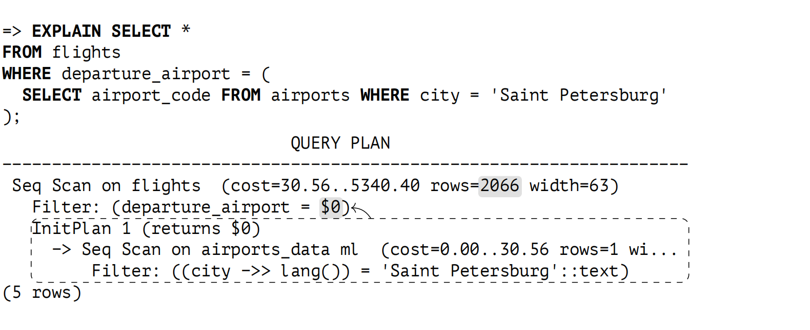
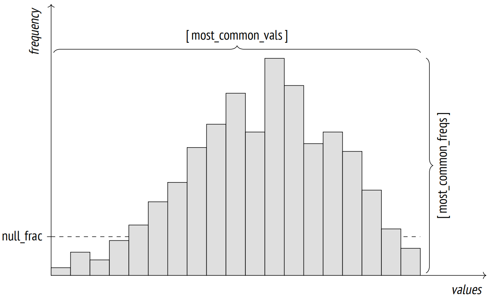
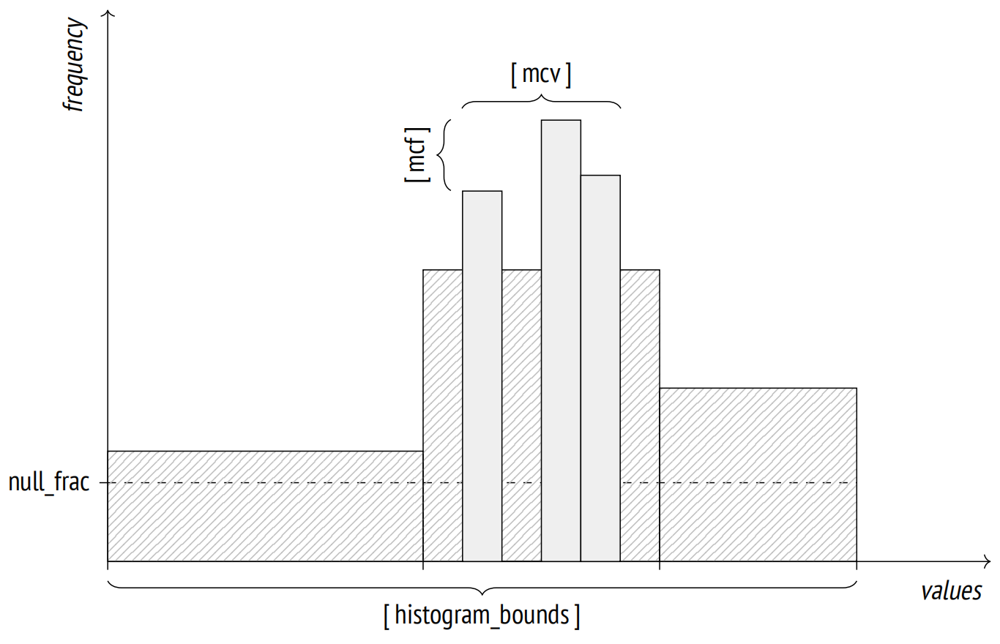

第 17 章：统计信息
17.1 基础统计信息
基础的关系级统计信息 1 存储在 pg_class 系统目录表中，其中包括以下数据：
- 关系中元组的数量 (reltuples)
- 关系大小，以页为单位 (relpages)
- 可见性映射中标记的页面数量 (relallvisible)
以下是 flights 表的这些值：
=> SELECT reltuples, relpages, relallvisible
FROM pg_class WHERE relname = 'flights';
reltuples | relpages | relallvisible
−−−−−−−−−−−+−−−−−−−−−−+−−−−−−−−−−−−−−−
214867 | 2624 | 2624
(1 row)如果查询没有施加任何过滤条件，那么 reltuples 值将作为基数进行估算：
=> EXPLAIN SELECT * FROM flights;
QUERY PLAN
−−−−−−−−−−−−−−−−−−−−−−−−−−−−−−−−−−−−−−−−−−−−−−−−−−−−−−−−−−−−−−−−
Seq Scan on flights (cost=0.00..4772.67 rows=214867 width=63)
(1 row)统计信息在表分析期间收集，包括手动收集和自动收集。2 此外，由于基础统计信息至关重要，因此在其他某些操作 (比如 VACUUM FULL 和 CLUSTER、3 CREATE INDEX 和 REINDEX 4 ) 期间也会计算这些数据，并在清理期间进行细化。5
出于分析目的，会从表中随机选择 300 × default_statistics_target 行进行采样。建立特定精度的统计信息所需的样本大小与进行分析的数据量关系不大，因此不需要考虑表的大小。6
采样行数取自相同数量 (300 × default_statistics_target) 的随机页面。7 显然，如果表本身越小，那么就可能读取更少的页面，并且为分析选择的行数也会更少。
在大表中，统计信息收集不包括所有行，因此估算值可能与实际值有所不同。这是完全正常的：如果数据在变化，统计信息无论如何都不可能始终准确。达到数量级的准确度就足以选择一个合适的计划。
让我们创建一个 flights 表的副本，并禁用自动清理以便可以控制自动分析的开始时间：
=> CREATE TABLE flights_copy(LIKE flights)
WITH (autovacuum_enabled = false);新表目前还没有统计信息：
=> SELECT reltuples, relpages, relallvisible
FROM pg_class WHERE relname = 'flights_copy';
reltuples | relpages | relallvisible
−−−−−−−−−−−+−−−−−−−−−−+−−−−−−−−−−−−−−−
−1 | 0 | 0
(1 row)值 reltuples = −1 用于区分尚未分析的表和没有任何行的真正的空表。
在表创建后不久，很有可能会有一些行被插入到表中。因此，对当前情况一无所知的规划器会假设表包含 10 个页面：
=> EXPLAIN SELECT * FROM flights_copy;
QUERY PLAN
−−−−−−−−−−−−−−−−−−−−−−−−−−−−−−−−−−−−−−−−−−−−−−−−−−−−−−−−−−−−−−−−−
Seq Scan on flights_copy (cost=0.00..14.10 rows=410 width=170)
(1 row)行数基于单行的大小进行估算，在计划中显示为 width。行宽度通常是分析期间计算出的平均值，但由于尚未收集过统计信息，因此此处只是基于列数据类型的一个近似值。8
现在让我们从 flights 表中复制数据并进行分析：
=> INSERT INTO flights_copy SELECT * FROM flights;
INSERT 0 214867
=> ANALYZE flights_copy;收集的统计信息反映了实际的行数 (表的大小足够小，分析器可以收集所有数据的统计信息)：
=> SELECT reltuples, relpages, relallvisible
FROM pg_class WHERE relname = 'flights_copy';
reltuples | relpages | relallvisible
−−−−−−−−−−−+−−−−−−−−−−+−−−−−−−−−−−−−−−
214867 | 2624 | 0
(1 row)relallvisible 值用于估算仅索引扫描的成本。这个值由 VACUUM 更新：
=> VACUUM flights_copy;
=> SELECT relallvisible FROM pg_class WHERE relname = 'flights_copy';
relallvisible
−−−−−−−−−−−−−−−
2624
(1 row)现在让我们在不更新统计信息的情况下将行数翻倍，然后检查计划中的基数预估：
=> INSERT INTO flights_copy SELECT * FROM flights;
=> SELECT count(*) FROM flights_copy;
count
−−−−−−−−
429734
(1 row)
=> EXPLAIN SELECT * FROM flights_copy;
QUERY PLAN
−−−−−−−−−−−−−−−−−−−−−−−−−−−−−−−−−−−−−−−−−−−−−−−−−−−−−−−−−−−−−−−−−−−−−
Seq Scan on flights_copy (cost=0.00..9545.34 rows=429734 width=63)
(1 row)尽管 pg_class 的数据是过时的，但预估的结果是准确的：
=> SELECT reltuples, relpages
FROM pg_class WHERE relname = 'flights_copy';
reltuples | relpages
−−−−−−−−−−−+−−−−−−−−−−
214867 | 2624
(1 row)问题在于，如果规划器发现 relpages 和实际文件大小之间存在差距，它可以缩放 reltuples 值以提高预估的准确性。9 由于与 relpages 相比文件大小增加了一倍，规划器调整了预估的行数，并假设数据密度保持不变：
=> SELECT reltuples *
(pg_relation_size('flights_copy') / 8192) / relpages AS tuples
FROM pg_class WHERE relname = 'flights_copy';
tuples
−−−−−−−−
429734
(1 row)当然，这样的调整可能并不总是有效 (例如，如果我们删除了一些行，预估值将保持不变)，但在某些情况下，它允许规划器保持，直到发生了显著变化，触发下一次分析的运行。
17.2 空值
尽管理论家们对此不赞成 10，但空值在关系数据库中仍然扮演着重要角色：它们提供了一种简便的方式来反映某个值是未知的或不存在的。
但是，特殊值需要特殊处理。除了理论上的不一致之外，还有许多实际挑战需要考虑。常规的布尔逻辑被三值逻辑所取代，因此 NOT IN 的行为出人意料。尚不清楚是否应该将空值视为大于或小于常规值 (因此排序时有 NULLS FIRST 和 NULLS LAST 子句)。不太明显的是，聚合函数是否应该考虑空值。严格来说，空值根本就不是一个值，因此规划器需要额外的信息来处理它们。
除了在关系级收集的最简单的基础统计信息之外，分析器还为关系的每一列收集统计信息。这些数据存储在系统目录表 pg_statistic 中 11，你也可以通过 pg_stats 视图访问，pg_stats 以更简便的格式提供这些信息。
空值的比例属于列级统计信息；在分析过程中计算，显示为 null_frac 属性。
例如，在搜索尚未起飞的航班时，我们可以依赖尚未定义的起飞时间：
=> EXPLAIN SELECT * FROM flights WHERE actual_departure IS NULL;
QUERY PLAN
−−−−−−−−−−−−−−−−−−−−−−−−−−−−−−−−−−−−−−−−−−−−−−−−−−−−−−−−−−−−−−−
Seq Scan on flights (cost=0.00..4772.67 rows=16702 width=63)
Filter: (actual_departure IS NULL)
(2 rows)为了预估结果，规划器将总行数乘以空值的比例：
=> SELECT round(reltuples * s.null_frac) AS rows
FROM pg_class
JOIN pg_stats s ON s.tablename = relname
WHERE s.tablename = 'flights'
AND s.attname = 'actual_departure';
rows
−−−−−−−
16702
(1 row)以下是实际的行数：
=> SELECT count(*) FROM flights WHERE actual_departure IS NULL;
count
−−−−−−−
16348
(1 row)17.3 非重复值
pg_stats 视图中的 n_distinct 字段显示了列中非重复值的数量。
如果 n_distinct 为负数，其绝对值表示列中非重复值的比例，而不是它们实际的数量。例如，-1 表示所有列值都是唯一的，而 -3 意味着每个值平均出现在三行中。如果非重复值的预估数量超过了总行数的 10%，那么分析器会使用一个比例值来显式；在这种情况下，进一步的数据更新不太可能改变这个比例值。12
如果预期数据分布均匀，那么会使用非重复值的数量。例如，在评估 “column = expression” 条件的基数时，如果在规划阶段无法知道表达式的确切值，那么规划器假设该表达式可以以相等的概率取任何列值：13
此处 InitPlan 节点只执行一次，计算出的值在主计划中使用。
=> SELECT round(reltuples / s.n_distinct) AS rows
FROM pg_class
JOIN pg_stats s ON s.tablename = relname
WHERE s.tablename = 'flights'
AND s.attname = 'departure_airport';
rows
−−−−−−
2066
(1 row)如果非重复值的预估数量不正确 (因为分析的行数有限)，那么你可以在列级别覆盖它：
ALTER TABLE ...
ALTER COLUMN ...
SET (n_distinct = ...);如果所有的数据始终均匀分布，则此信息 (加上最小值和最大值) 就足够了。然而，对于非均匀分布 (在实际中更为常见) ，这样的估算是不准确的：
=> SELECT min(cnt), round(avg(cnt)) avg, max(cnt)
FROM (
SELECT departure_airport, count(*) cnt
FROM flights
GROUP BY departure_airport
) t;
min | avg | max
−−−−−+−−−−−−+−−−−−−−
113 | 2066 | 20875
(1 row)17.4 高频值
如果数据分布不均，那么会根据高频值 (MCV) 及其频率的统计信息对预估值进行微调。pg_stats 视图分别在 most_common_vals 和 most_common_freqs 字段中显示这些数组。
以下是各种类型的飞机关于此类统计信息的一个例子：
=> SELECT most_common_vals AS mcv,
left(most_common_freqs::text,60) || '...' AS mcf
FROM pg_stats
WHERE tablename = 'flights' AND attname = 'aircraft_code' \gx
−[ RECORD 1 ]−−−−−−−−−−−−−−−−−−−−−−−−−−−−−−−−−−−−−−−−−−−−−−−−−−−−−−−−
mcv | {CN1,CR2,SU9,321,733,763,319,773}
mcf | {0.27886668,0.27266666,0.26176667,0.057166666,0.037666667,0....为了预估 “column = value” 条件的选择率，只需在 most_common_vals 数组中找到这个值，并从具有相同位置的 most_common_freqs 数组元素中获取其频率即可：14
=> EXPLAIN SELECT * FROM flights WHERE aircraft_code = '733';
QUERY PLAN
−−−−−−−−−−−−−−−−−−−−−−−−−−−−−−−−−−−−−−−−−−−−−−−−−−−−−−−−−−−−−−
Seq Scan on flights (cost=0.00..5309.84 rows=8093 width=63)
Filter: (aircraft_code = '733'::bpchar)
(2 rows)
=> SELECT round(reltuples * s.most_common_freqs[
array_position((s.most_common_vals::text::text[]),'733')
])
FROM pg_class
JOIN pg_stats s ON s.tablename = relname
WHERE s.tablename = 'flights'
AND s.attname = 'aircraft_code';
round
−−−−−−−
8093
(1 row)显然，这样的估算值与实际值相近：
=> SELECT count(*) FROM flights WHERE aircraft_code = '733';
count
−−−−−−−
8263
(1 row)MCV 列表还用于预估不等条件的选择率。例如，"column < value" 这样的条件要求分析器在 most_common_vals 中搜索所有小于目标值的值，并将 most_common_freqs 中列出的相应频率相加。15
当非重复值不是太多时，MCV 统计信息效果最佳。数组的最大大小由 default_statistics_target 参数定义，该参数也限制了用于分析目的而随机采样的行数。
在某些情况下，增加默认参数值是有意义的，从而扩大 MCV 列表并提高预估的准确性。你可以在列级别执行该操作：
ALTER TABLE ...
ALTER COLUMN ...
SET STATISTICS ...;采样大小也会增长，但仅限于指定的表。
由于 MCV 数组存储了实际的值，因此可能会占用相当多的空间。为了控制 pg_statistic 大小并避免给规划器增加无用功，大于 1 kB 的值会被排除在分析和统计之外。但由于如此大的值可能是唯一的，它们可能本来就不会出现在 most_common_vals 中。
17.5 直方图
如果非重复值太多以至于无法存储在数组中，PostgreSQL 便会使用直方图。在这种情况下，值会分布在直方图的多个桶之间。桶的数量也受到 default_statistics_target 参数的限制。
桶宽度的选择方式是使每个桶获得大致相同数量的值 (这个特性在图中通过面积相等的阴影矩形来体现)。直方图不考虑包含在 MCV 列表中的值。因此，每个桶中值的累积频率等于 $\frac{1}{\text{number of buckets}}$。
直方图作为桶的边界值数组存储在 pg_stats 视图的 histogram_bounds 字段中：
=> SELECT left(histogram_bounds::text,60) || '...' AS hist_bounds
FROM pg_stats s
WHERE s.tablename = 'boarding_passes' AND s.attname = 'seat_no';
hist_bounds
−−−−−−−−−−−−−−−−−−−−−−−−−−−−−−−−−−−−−−−−−−−−−−−−−−−−−−−−−−−−−−−−−
{10B,10E,10F,10F,11H,12B,13B,14B,14H,15G,16B,17B,17H,19B,19B...
(1 row)结合 MCV 列表，直方图用于估算大于和小于条件的选择率等操作 16。例如，让我们看一下为后排座位签发的登机牌数量：
=> EXPLAIN SELECT * FROM boarding_passes WHERE seat_no > '30B';
QUERY PLAN
−−−−−−−−−−−−−−−−−−−−−−−−−−−−−−−−−−−−−−−−−−−−−−−−−−−−−−−−−−−−−−−−−−−−−
Seq Scan on boarding_passes (cost=0.00..157350.10 rows=2983242 ...
Filter: ((seat_no)::text > '30B'::text)
(2 rows)我特意选择了位于两个直方图桶之间边界上的座位号。这个条件的选择率将估算为 $\frac{N}{\text{number of buckets}}$，其中 N 是包含满足条件的值 (即位于指定值右侧的桶) 的桶数量。同时还需要考虑到 MCV 不包含在直方图中。
顺便说一下，空值也不会出现在直方图中，但 seat_no 列本来就没有这样的值：
=> SELECT s.null_frac FROM pg_stats s
WHERE s.tablename = 'boarding_passes' AND s.attname = 'seat_no';
null_frac
−−−−−−−−−−−
0
(1 row)首先，让我们找出满足条件的 MCV 的比例：
=> SELECT sum(s.most_common_freqs[
array_position((s.most_common_vals::text::text[]),v)
])
FROM pg_stats s, unnest(s.most_common_vals::text::text[]) v
WHERE s.tablename = 'boarding_passes' AND s.attname = 'seat_no'
AND v > '30B';
sum
−−−−−−−−−−−−
0.21226665
(1 row)整体 MCV 的占比 (直方图忽略的部分) 为：
=> SELECT sum(s.most_common_freqs[
array_position((s.most_common_vals::text::text[]),v)
])
FROM pg_stats s, unnest(s.most_common_vals::text::text[]) v
WHERE s.tablename = 'boarding_passes' AND s.attname = 'seat_no';
sum
−−−−−−−−−−−−
0.67816657
(1 row)由于符合指定条件的值恰好占据了 𝑁 个桶 (在可能的 100 个桶中)，我们得到以下估算：
=> SELECT round( reltuples * (
0.21226665 -- MCV share
+ (1 - 0.67816657 - 0) * (51 / 100.0) -- histogram share
))
FROM pg_class
WHERE relname = 'boarding_passes';
round
−−−−−−−−−
2983242
(1 row)在非边界值的一般情况下，规划器采用线性插值来考虑包含目标值的桶的部分。
以下是后座的实际数量：
=> SELECT count(*) FROM boarding_passes WHERE seat_no > '30B';
count
−−−−−−−−−
2993735
(1 row)随着增加 default_statistics_target 值，估算的准确性可能会提高，但正如我们的例子所示，即使列包含许多唯一值，直方图与 MCV 列表相结合通常也可以提供很好的结果：
=> SELECT n_distinct FROM pg_stats
WHERE tablename = 'boarding_passes' AND attname = 'seat_no';
n_distinct
−−−−−−−−−−−−
461
(1 row)只有当能产生更好的规划时，提高预估的准确性才有意义。不加思考便增加 default_statistics_target 值可能会减慢规划和分析的速度，而不会带来任何好处。话虽如此，减小此参数值 (降至零) 可能会导致选择不良的计划，即使这确实加快了规划和分析的速度。这种节省通常是不合理的。
17.6 非标量数据类型的统计信息
对于非标量数据类型，PostgreSQL 不仅可以收集值的分布统计信息，还可以收集用于构造这些值的元素的分布信息。当查询不符合第一范式的列时，它可以提高规划的准确性。
- most_common_elems 和 most_common_elem_freqs 数组显示了高频元素列表及其使用频率。收集这些统计信息用于估算在数组 17 和 tsvector 18 数据类型上的操作选择率。
- elem_count_histogram 数组显示了值中不同元素的数量的直方图，收集此数据仅用于估算在数组上操作的选择率。
- 对于范围类型，PostgreSQL 为范围长度以及范围的下边界与上边界构建了分布直方图。这些直方图用于估算在这些类型上各种操作的选择率 19，但 pg_stats 视图没有显示它们。
multirange 数据类型也会收集类似的统计信息。20
17.7 平均列宽
pg_stats 视图中的 avg_width 字段显示了存储在列中的值的平均大小。当然，对于像 integer 或 char(3) 这样的类型，这个大小总是相同的，但是对于变长的数据类型，比如 text，列与列之间可能有很大的不同：
=> SELECT attname, avg_width FROM pg_stats
WHERE (tablename, attname) IN ( VALUES
('tickets', 'passenger_name'), ('ticket_flights','fare_conditions')
);
attname | avg_width
−−−−−−−−−−−−−−−−−+−−−−−−−−−−−
fare_conditions | 8
passenger_name | 16
(2 rows)该统计信息用于估算排序或哈希等这类操作所需的内存量。
17.8 相关性
pg_stats 视图中的 correlation 字段显示了数据的物理顺序和比较操作所定义的逻辑顺序之间的相关性。如果值严格按升序存储，那么它们的相关性将接近于 1；如果按降序排列，那么相关性将接近 -1。数据在磁盘上的分布越混乱，相关性越接近于零。
=> SELECT attname, correlation
FROM pg_stats WHERE tablename = 'airports_data'
ORDER BY abs(correlation) DESC;
attname | correlation
−−−−−−−−−−−−−−+−−−−−−−−−−−−−
coordinates |
airport_code | −0.21120238
city | −0.1970127
airport_name | −0.18223621
timezone | 0.17961165
(5 rows)注意，此统计信息不适用于 coordinates 列：对于 point 类型，没有定义小于和大于操作符。
相关性用于估算索引扫描的成本。
17.9 表达式统计信息
仅当比较操作的左侧或右侧部分引用了列本身并且不包含任何表达式时，才能使用列级统计信息。例如，规划器无法预测对列进行函数计算将如何影响统计信息，因此对于 “function-call = constant” 这样的条件，选择率总是估算为 0.5%：21
=> EXPLAIN SELECT * FROM flights
WHERE extract(
month FROM scheduled_departure AT TIME ZONE 'Europe/Moscow'
) = 1;
QUERY PLAN
−−−−−−−−−−−−−−−−−−−−−−−−−−−−−−−−−−−−−−−−−−−−−−−−−−−−−−−−−−−−−−−−−−−−−
Seq Scan on flights (cost=0.00..6384.17 rows=1074 width=63)
Filter: (EXTRACT(month FROM (scheduled_departure AT TIME ZONE ...
(2 rows)
=> SELECT round(reltuples * 0.005)
FROM pg_class WHERE relname = 'flights';
round
−−−−−−−
1074
(1 row)规划器对函数的语义一无所知，即使是标准函数也是如此。我们的常识表明，在一月份执飞的航班数量大约占总航班数量的 1/12 左右，这一数字比预测值高出一个数量级。
为了提高估算的准确性，我们需要收集表达式统计信息，而不是依赖于列级别的统计信息。有两种方法可以做到这一点。
17.9.1 扩展表达式统计信息
第一个方法是使用扩展表达式统计信息 22。默认情况下不会收集此类统计信息；你必须通过运行 CREATE STATISTICS 命令手动创建相应的数据库对象：
=> CREATE STATISTICS flights_expr ON (extract(
month FROM scheduled_departure AT TIME ZONE 'Europe/Moscow'
))
FROM flights;数据收集之后，估算的准确性便会提高：
=> ANALYZE flights;
=> EXPLAIN SELECT * FROM flights
WHERE extract(
month FROM scheduled_departure AT TIME ZONE 'Europe/Moscow'
) = 1;
QUERY PLAN
−−−−−−−−−−−−−−−−−−−−−−−−−−−−−−−−−−−−−−−−−−−−−−−−−−−−−−−−−−−−−−−−−−−−−
Seq Scan on flights (cost=0.00..6384.17 rows=16667 width=63)
Filter: (EXTRACT(month FROM (scheduled_departure AT TIME ZONE ...
(2 rows)要应用所收集的统计信息，查询必须指定和 CREATE STATISTICS 命令形式完全相同的表达式。
扩展统计信息的大小限制可以通过运行 ALTER STATISTICS 命令单独调整。例如：
=> ALTER STATISTICS flights_expr SET STATISTICS 42;所有与扩展统计信息相关的元数据都存储在系统目录的 pg_statistic_ext 表中，而收集的数据本身位于一个名为 pg_statistic_ext_data 的单独的表中。这种分离用于实现对敏感信息的访问控制。
特定用户可用的扩展表达式统计信息位于一个单独的视图中，以一种更简便的格式显示：
=> SELECT left(expr,50) || '...' AS expr,
null_frac, avg_width, n_distinct,
most_common_vals AS mcv,
left(most_common_freqs::text,50) || '...' AS mcf,
correlation
FROM pg_stats_ext_exprs
WHERE statistics_name = 'flights_expr' \gx
−[ RECORD 1 ]−−−−−−−−−−−−−−−−−−−−−−−−−−−−−−−−−−−−−−−−−−−−−−−−−−−−−−
expr | EXTRACT(month FROM (scheduled_departure AT TIME ZO...
null_frac | 0
avg_width | 8
n_distinct | 12
mcv | {8,9,12,3,1,5,6,7,11,10,4,2}
mcf | {0.12053333,0.11326667,0.0802,0.07976667,0.0775666...
correlation | 0.0835574917.9.2 表达式索引统计信息
另一种改善基数估算的方式是使用为表达式索引收集的特殊统计信息；创建此类索引时会自动收集这些统计信息，就像对表进行收集一样。如果确实需要索引，这种方法会非常方便。
=> DROP STATISTICS flights_expr;
=> CREATE INDEX ON flights(extract(
month FROM scheduled_departure AT TIME ZONE 'Europe/Moscow'
));
=> ANALYZE flights;
=> EXPLAIN SELECT * FROM flights
WHERE extract(
month FROM scheduled_departure AT TIME ZONE 'Europe/Moscow'
) = 1;
QUERY PLAN
−−−−−−−−−−−−−−−−−−−−−−−−−−−−−−−−−−−−−−−−−−−−−−−−−−−−−−−−−−−−−−−−−−−−−
Bitmap Heap Scan on flights (cost=324.86..3247.92 rows=17089 wi...
Recheck Cond: (EXTRACT(month FROM (scheduled_departure AT TIME...
−> Bitmap Index Scan on flights_extract_idx (cost=0.00..320.5...
Index Cond: (EXTRACT(month FROM (scheduled_departure AT TI...
(4 rows)表达式索引的统计信息与表上的统计信息以相同的方式存储。例如，当查询 pg_stats 时，你可以通过指定索引名称为 tablename 来获取非重复值的数量：
=> SELECT n_distinct FROM pg_stats
WHERE tablename = 'flights_extract_idx';
n_distinct
−−−−−−−−−−−−
12
(1 row)你可以使用 ALTER INDEX 命令来调整与索引相关的统计信息的准确性。如果你不知道索引表达式对应的列名，则需要先找出它。例如：
=> SELECT attname FROM pg_attribute
WHERE attrelid = 'flights_extract_idx'::regclass;
attname
−−−−−−−−−
extract
(1 row)
=> ALTER INDEX flights_extract_idx
ALTER COLUMN extract SET STATISTICS 42;17.10 多元统计信息
你还可以收集涵盖多个列的多元统计信息。作为前置条件，你必须使用 CREATE STATISTICS 命令手动创建相应的扩展统计信息。
PostgreSQL 实现了三种类型的多元统计信息。
17.10.1 列之间的函数依赖
如果一列中的值 (完全或部分) 依赖于另一列中的值，并且过滤条件包括这两列，那么基数预估会偏低。
让我们考虑一个包含两个过滤条件的查询：
=> SELECT count(*) FROM flights
WHERE flight_no = 'PG0007' AND departure_airport = 'VKO';
count
−−−−−−−
396
(1 row)估算值被严重低估：
=> EXPLAIN SELECT * FROM flights
WHERE flight_no = 'PG0007' AND departure_airport = 'VKO';
QUERY PLAN
−−−−−−−−−−−−−−−−−−−−−−−−−−−−−−−−−−−−−−−−−−−−−−−−−−−−−−−−−−−−−−−−−−−−−
Bitmap Heap Scan on flights (cost=10.49..816.84 rows=15 width=63)
Recheck Cond: (flight_no = 'PG0007'::bpchar)
Filter: (departure_airport = 'VKO'::bpchar)
−> Bitmap Index Scan on flights_flight_no_scheduled_departure_key
(cost=0.00..10.49 rows=276 width=0)
Index Cond: (flight_no = 'PG0007'::bpchar)
(6 rows)这是关联谓词的一个众所周知的问题。规划器会假设谓词之间互不依赖，因此整体选择率被估算为逻辑与连接的过滤条件的选择率之积。上面的计划清楚地说明了这个问题：一旦 Bitmap Heap Scan 节点按 departure_airport 列的条件过滤结果，那么 Bitmap Index Scan 在 flight_no 列上的条件的预估值就会大大减少。
然而，我们确实知道飞机是由航班号明确定义的：第二个条件实际上是多余的 (当然，除非机场名称有误)。在这种情况下，我们可以通过应用函数依赖的扩展统计信息来改善估算。
让我们在两个列之间的函数依赖上创建一个扩展统计信息：
=> CREATE STATISTICS flights_dep(dependencies)
ON flight_no, departure_airport FROM flights;下一次分析将收集此统计信息，并且预估值得到了改善：
=> ANALYZE flights;
=> EXPLAIN SELECT * FROM flights
WHERE flight_no = 'PG0007'
AND departure_airport = 'VKO';
QUERY PLAN
−−−−−−−−−−−−−−−−−−−−−−−−−−−−−−−−−−−−−−−−−−−−−−−−−−−−−−−−−−−−−−−−−−−−−
Bitmap Heap Scan on flights (cost=10.57..819.51 rows=277 width=63)
Recheck Cond: (flight_no = 'PG0007'::bpchar)
Filter: (departure_airport = 'VKO'::bpchar)
−> Bitmap Index Scan on flights_flight_no_scheduled_departure_key
(cost=0.00..10.50 rows=277 width=0)
Index Cond: (flight_no = 'PG0007'::bpchar)
(6 rows)收集的统计信息存储在系统目录中，可以像这样访问：
=> SELECT dependencies
FROM pg_stats_ext WHERE statistics_name = 'flights_dep';
dependencies
−−−−−−−−−−−−−−−−−−−−−−−−−−−−−−−−−−−−−−−−−−
{"2 => 5": 1.000000, "5 => 2": 0.010200}
(1 row)此处的 2 和 5 是存储在 pg_attribute 表中的列编号，而相应的值定义了函数依赖的程度：从 0 (无依赖) 到 1 (第二列中的值完全依赖于第一列中的值)。
17.10.2 多元非重复值的数量
不同列中值的唯一组合的统计信息可以改善在多个列上执行的 GROUP BY 操作的基数估算。
例如，此处估算的可能的出发机场和到达机场的配对数量是机场总数的平方；然而，实际值要小得多，因为并非所有的机场对都通过直达航班连接：
=> SELECT count(*)
FROM (
SELECT DISTINCT departure_airport, arrival_airport FROM flights
) t;
count
−−−−−−−
618
(1 row)
=> EXPLAIN SELECT DISTINCT departure_airport, arrival_airport
FROM flights;
QUERY PLAN
−−−−−−−−−−−−−−−−−−−−−−−−−−−−−−−−−−−−−−−−−−−−−−−−−−−−−−−−−−−−−−−−−−−−
HashAggregate (cost=5847.01..5955.16 rows=10816 width=8)
Group Key: departure_airport, arrival_airport
−> Seq Scan on flights (cost=0.00..4772.67 rows=214867 width=8)
(3 rows)让我们定义并收集非重复值的扩展统计信息：
=> CREATE STATISTICS flights_nd(ndistinct)
ON departure_airport, arrival_airport FROM flights;
=> ANALYZE flights;现在基数估算得到改善：
=> EXPLAIN SELECT DISTINCT departure_airport, arrival_airport
FROM flights;
QUERY PLAN
−−−−−−−−−−−−−−−−−−−−−−−−−−−−−−−−−−−−−−−−−−−−−−−−−−−−−−−−−−−−−−−−−−−−
HashAggregate (cost=5847.01..5853.19 rows=618 width=8)
Group Key: departure_airport, arrival_airport
−> Seq Scan on flights (cost=0.00..4772.67 rows=214867 width=8)
(3 rows)你可以在系统目录中查看收集的统计信息：
=> SELECT n_distinct
FROM pg_stats_ext WHERE statistics_name = 'flights_nd';
n_distinct
−−−−−−−−−−−−−−−
{"5, 6": 618}
(1 row)17.10.3 多元 MCV 列表
如果值的分布不均，仅依赖函数依赖可能是不够的，因为估算的准确性高度依赖于特定的一组值。例如，规划器低估了波音 737 从谢列梅捷沃机场出发的航班数量：
=> SELECT count(*) FROM flights
WHERE departure_airport = 'SVO' AND aircraft_code = '733';
count
−−−−−−−
2037
(1 row)
=> EXPLAIN SELECT * FROM flights
WHERE departure_airport = 'SVO' AND aircraft_code = '733';
QUERY PLAN
−−−−−−−−−−−−−−−−−−−−−−−−−−−−−−−−−−−−−−−−−−−−−−−−−−−−−−−−−−−−−−−−−−−−−
Seq Scan on flights (cost=0.00..5847.00 rows=736 width=63)
Filter: ((departure_airport = 'SVO'::bpchar) AND (aircraft_cod...
(2 rows)在这种情况下，你可以通过收集多元 MCV 列表的统计信息来改善估算：23
=> CREATE STATISTICS flights_mcv(mcv)
ON departure_airport, aircraft_code FROM flights;
=> ANALYZE flights;新的基数估算更加准确：
=> EXPLAIN SELECT * FROM flights
WHERE departure_airport = 'SVO' AND aircraft_code = '733';
QUERY PLAN
−−−−−−−−−−−−−−−−−−−−−−−−−−−−−−−−−−−−−−−−−−−−−−−−−−−−−−−−−−−−−−−−−−−−−
Seq Scan on flights (cost=0.00..5847.00 rows=1927 width=63)
Filter: ((departure_airport = 'SVO'::bpchar) AND (aircraft_cod...
(2 rows)为了得到此估算值，规划器依赖于存储在系统目录中的频率值：
=> SELECT values, frequency
FROM pg_statistic_ext stx
JOIN pg_statistic_ext_data stxd ON stx.oid = stxd.stxoid,
pg_mcv_list_items(stxdmcv) m
WHERE stxname = 'flights_mcv'
AND values = '{SVO,773}';
values | frequency
−−−−−−−−−−−+−−−−−−−−−−−−−−−−−−−−−−
{SVO,773} | 0.005266666666666667
(1 row)就像常规 MCV 列表一样，多元 MCV 列表包含 default_statistics_target 个值 (如果在列级别也设置了该参数，则使用其最大值)。
如果需要，你也可以像对扩展表达式统计信息那样更改列表大小：
ALTER STATISTICS ... SET STATISTICS ...;在所有这些示例中，我只使用了两列，但你同样可以收集更多列的多元统计信息。
要在一个对象中组合多种类型的统计信息，你可以在其定义中提供这些类型的逗号分隔列表。如果没有指定类型，那么 PostgresSQL 会收集指定列的所有可能类型的统计信息。
除了实际的列名，多元统计信息还可以使用任意表达式，就像表达式统计信息一样。
-
postgresql.org/docs/14/planner-stats.html ↩︎
-
backend/commands/analyze.c, do_analyze_rel function ↩︎
-
backend/commands/cluster.c, copy_table_data function ↩︎
-
backend/catalog/heap.c, index_update_stats function ↩︎
-
backend/access/heap/vacuumlazy.c, heap_vacuum_rel function ↩︎
-
backend/commands/analyze.c, std_typanalyze function ↩︎
-
backend/commands/analyze.c, acquire_sample_rows function
backend/utils/misc/sampling.c ↩︎ -
backend/access/table/tableam.c, table_block_relation_estimate_size function ↩︎
-
backend/access/table/tableam.c, table_block_relation_estimate_size function ↩︎
-
sigmodrecord.org/publications/sigmodRecord/0809/p20.date.pdf ↩︎
-
include/catalog/pg_statistic.h ↩︎
-
backend/commands/analyze.c, compute_distinct_stats function ↩︎
-
backend/utils/adt/selfuncs.c, var_eq_non_const function ↩︎
-
backend/utils/adt/selfuncs.c, var_eq_const function ↩︎
-
backend/utils/adt/selfuncs.c, scalarineqsel function ↩︎
-
backend/utils/adt/selfuncs.c, ineq_histogram_selectivity function ↩︎
-
postgresql.org/docs/14/arrays.html
backend/utils/adt/array_typanalyze.c
backend/utils/adt/array_selfuncs.c ↩︎ -
postgresql.org/docs/14/datatype-textsearch.html
backend/tsearch/ts_typanalyze.c
backend/tsearch/ts_selfuncs.c ↩︎ -
postgresql.org/docs/14/rangetypes.html
backend/utils/adt/rangetypes_typanalyze.c
backend/utils/adt/rangetypes_selfuncs.c ↩︎ -
backend/utils/adt/multirangetypes_selfuncs.c ↩︎
-
backend/utils/adt/selfuncs.c, eqsel function ↩︎
-
postgresql.org/docs/14/planner-stats#PLANNER-STATS-EXTENDED.html
backend/statistics/README ↩︎ -
backend/statistics/README.mcv
backend/statistics/mcv.c ↩︎